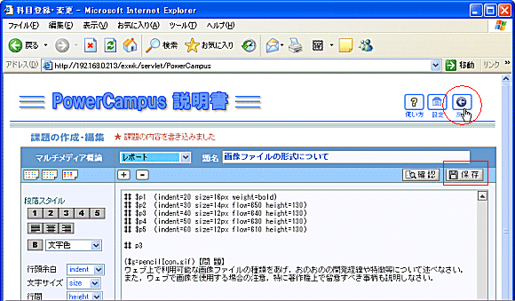
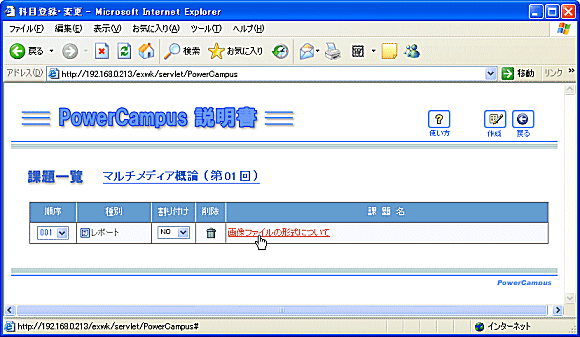

|
問題を書いているときは，時々  をクリックしておくと，不意のデータ消失を防げます． をクリックしておくと，不意のデータ消失を防げます．
また， をクリックしてプレビューを見るときも，データが保存されますので，時々プレビューを見ると同じ効果があります．問題が完成したら戻るボタンで課題画面に戻ります． をクリックしてプレビューを見るときも，データが保存されますので，時々プレビューを見ると同じ効果があります．問題が完成したら戻るボタンで課題画面に戻ります．

課題画面に戻るとリストに作成した課題が表示されています．
この課題を再度編集したいときは，課題タイトルをクリックします.
なお，この課題は作成しただけでまだ講義のどの回に割り付けるか決めていないので，「割り付け」はＮＯになっています．今，講義の第１回目で課題ボタンをクリックして作業をしていましたので，ここでYESに変更すると，この課題は第１回目に割り付けられます．

|
|
 レポート課題の出題と採点 － (1)課題の出題
レポート課題の出題と採点 － (1)課題の出題
 レポート課題の作成
レポート課題の作成